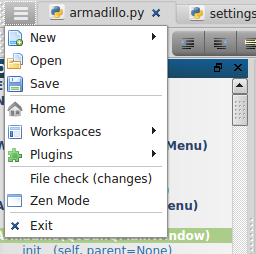

Armadillo is a lightweight, cross-platform IDE primarily for Python and Web Development, while also providing an editor for most languages. Armadillo is inspired by SPE, Geany, Notepad++ and Spyder. Armadillo is written in Python with PyQt for the UI. Some HTML5 is utilized for the ui with Qt's built in WebKit (QWebView).
Features
Zen Mode - Toggle Zen mode (F11) to hide plugins and toolbar (tab bar is still visible)
Run - Run current file (Supported languages: Python, HTML, Markdown)
Custom Settings - choose the default editor for each language, and choose your favorite languages
Workspaces - Save multiple workspaces to manage multiple projects (directory path, visible plugins, last opened files)
Main Window Functions
Main Menu

The main menu button is on the top left of the tabbar and stays open during Zen Mode
New - menu with list of default languages and all editor languages
Open - Popup to select a file
Save - Save the current open tab
Home - Show the main/start page
Workspaces - Show the workspace menu (to create, delete, or open an existing workspace)
Plugins - Toggle on/off the plugin dockwidgets and toolbars
Settings - Open and edit the settings file
File Check (changes) - checks if any of the open files have been modified outside this editor. This also checks to see if the file was deleted outside the editor.
Zen Mode - Toggle Zen mode (F11) to hide plugins and toolbar (tab bar is still visible)
Toolbar
The toolbar is available for convenience, but can also be hidden as all functions are available through keyboard functions or the main menu.
New File - menu with list of default languages and all editor languages
Workspace - Show the workspace menu (to create, delete, or open an existing workspace)
Open - Popup to select a file
Save - Save the current open tab
Indent - Indent the current line/selection
Unindent - Unindent the current line/selection
Comment - Toggle the current line/selection as commented or uncommented (uses first line of selection to determine
WordWrap - Toggle on/off wordwrap for the current open tab
Run - Run current file (Supported languages: Python, HTML, Markdown)
Home - Show the main/start page
Plugins - Toggle on/off the plugin dockwidgets and toolbars
 New - menu with list of default languages and all editor languages
New - menu with list of default languages and all editor languages Open - Popup to select a file
Open - Popup to select a file Save - Save the current open tab
Save - Save the current open tab Home - Show the main/start page
Home - Show the main/start page Workspaces - Show the workspace menu (to create, delete, or open an existing workspace)
Workspaces - Show the workspace menu (to create, delete, or open an existing workspace) Plugins - Toggle on/off the plugin dockwidgets and toolbars
Plugins - Toggle on/off the plugin dockwidgets and toolbars Settings - Open and edit the settings file
Settings - Open and edit the settings file Zen Mode - Toggle Zen mode (F11) to hide plugins and toolbar (tab bar is still visible)
Zen Mode - Toggle Zen mode (F11) to hide plugins and toolbar (tab bar is still visible)
 Unindent - Unindent the current line/selection
Unindent - Unindent the current line/selection Comment - Toggle the current line/selection as commented or uncommented (uses first line of selection to determine
Comment - Toggle the current line/selection as commented or uncommented (uses first line of selection to determine WordWrap - Toggle on/off wordwrap for the current open tab
WordWrap - Toggle on/off wordwrap for the current open tab Run - Run current file (Supported languages: Python, HTML, Markdown)
Run - Run current file (Supported languages: Python, HTML, Markdown)